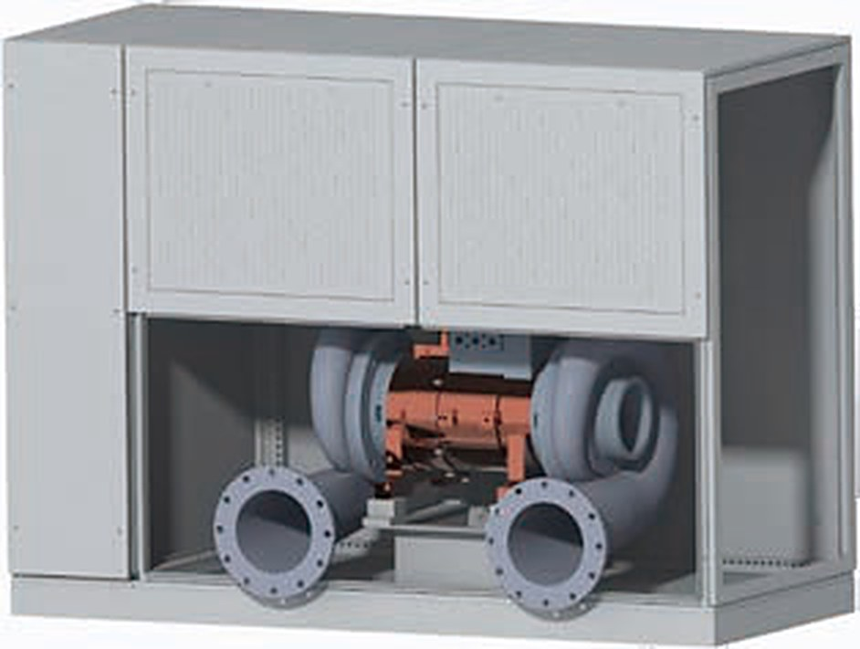
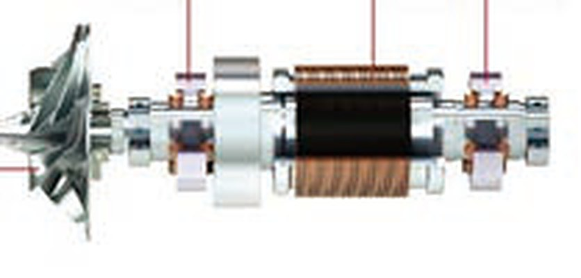
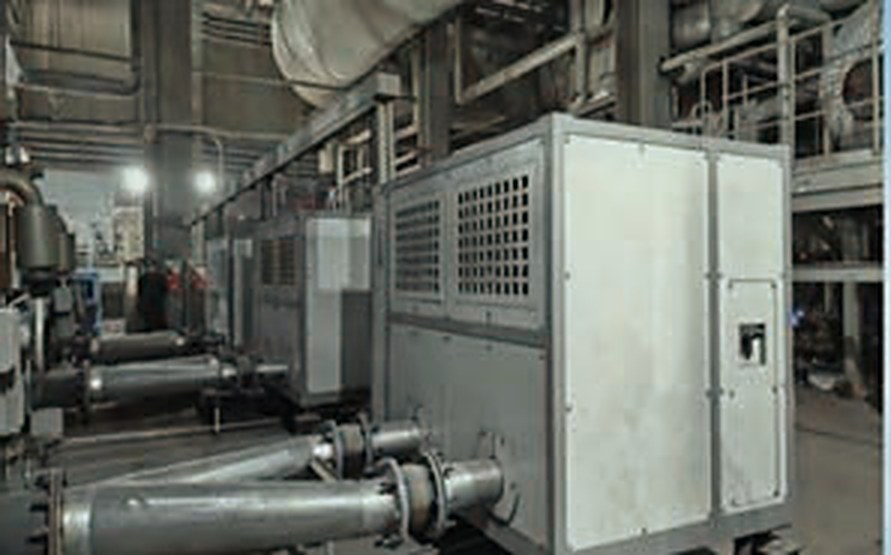

High-speed turbo machinery · oil-free
18.5–750 kW centrifugal blowers on magnetic bearings, 15–300 kW air-foil blowers, and air-foil compressors to 500 kPa. No gearbox, no oil, no mechanical contact — 85%+ efficiency where a Roots blower delivers under 65%.
Air duty is sized in cubic metres per minute and paid for in kilowatts, continuously. A Roots blower loses its efficiency to tip clearance and to a belt drive; a water-ring vacuum pump spends a third to a half of its shaft power churning sealing water.
A levitated rotor removes both losses. The impeller is the only moving part, it runs at up to 40,000 rpm on a film of magnetic force or air, and nothing touches anything until the rotor lands at standstill.
| Roots vacuum pump | Ceramic-bearing turbo | Air-foil turbo | |
|---|---|---|---|
| Rotor speed | < 2,000 rpm | ≤ 20,000 rpm | ≤ 40,000 rpm |
| Bearing | Conventional ball | Ceramic ball | Hydrodynamic air film |
| Bearing life | 1–2 years | under 1 year | Semi-permanent |
| Bearing power loss | 2–5% | 2–5% | < 0.1% |
| Drive | Belt | Direct | Direct |
| Unit efficiency | < 65% | > 80% | > 85% |
| Noise | 90–105 dB(A) | ≤ 90 dB(A) | ≤ 70 dB(A) |
| Annual maintenance | Belts, oil, shaft seals | Bearing replacement | Filter mat |
No oil, no water, no gearbox. That removes the oil circuit, the oil cooler, the sealing-water supply and the belt drive from the equipment list — and from the maintenance schedule as well.
Field reference
A magnetic-bearing high-speed blower replaced the return-air fan on a circulating-fluidised-bed boiler. Belt drive and gearbox out, direct-drive rotor in — lower parasitic loss, no lubrication schedule, and stable pressure at part load.
ApplicationCFB return-air fan
MachineMagnetic-bearing blower
StatusIn service
Three families
Both are oil-free and both are direct drive. Magnetic bearings carry the large rotors and report rotor position continuously; air-foil bearings are the simpler, lower-cost architecture at moderate power.
DHMCB · magnetic bearing
Five-axis active magnetic bearings with digital control. Rotor displacement, vibration and temperature are measured and reported — the machine tells you its condition instead of failing without warning.
DHK · air foil bearing
Compliant foil bearings riding on an air film generated by the rotor itself. No bearing controller, no electromagnets, no backup-bearing electronics.
DKY · air foil bearing
Oil-free compressed air at process pressure, for plants that cannot accept oil carry-over in the air line.
Machine and site
A magnetic-bearing blower on fluidising duty at a thermal power plant, the impeller that is the only moving part, and the bearing that carries it.



Selection table · magnetic bearing blowers
Flow in m³/min at 1 atm, 20 °C, 65% RH. Where a cell is blank the model is not offered at that pressure rise.
| Model | 18 | 22 | 30 | 37 | 45 | 55 | 75 | 90 | 110 |
|---|---|---|---|---|---|---|---|---|---|
| Power (kW) | 18.5 | 22 | 30 | 37 | 45 | 55 | 75 | 90 | 110 |
| 60 kPa | 16.4 | 20 | 27 | 34 | 42 | 52 | 69 | 82 | 105 |
| 80 kPa | 12.7 | 17 | 23 | 28 | 34 | 43 | 56 | 71 | 84 |
| 100 kPa | — | — | — | 22 | 26 | 35 | 48 | 57 | 73 |
| 120 kPa | — | — | — | — | — | — | 39 | 48 | 58 |
| Model | 150 | 185 | 220 | 250 | 300 | 400 | 500 | 800 | 1000 |
|---|---|---|---|---|---|---|---|---|---|
| Power (kW) | 150 | 185 | 220 | 250 | 300 | 400 | 500 | 600 | 750 |
| 60 kPa | 140 | 160 | 210 | 228 | 272 | 320 | 420 | 545 | 640 |
| 80 kPa | 109 | 135 | 164 | 175 | 216 | 270 | 325 | 430 | 540 |
| 100 kPa | 96 | 118 | 145 | 146 | 190 | 225 | 270 | 360 | 452 |
| 120 kPa | 78 | 95 | 117 | 123 | 156 | 200 | 240 | 318 | 400 |
Flow m³/min. Flange sizes from DN125 to DN600 depending on model and pressure rise; dimensions and mass are issued with the datasheet.
Selection tables · air foil bearing
| DHK blower | 15 | 22 | 37 | 55 | 75 | 90 | 110 | 150 | 185 | 220 | 300 |
|---|---|---|---|---|---|---|---|---|---|---|---|
| Power (kW) | 15 | 22 | 37 | 55 | 75 | 90 | 110 | 150 | 185 | 220 | 300 |
| 40 kPa | 16 | 31 | 48 | 74 | 100 | 120 | 147 | 201 | 220 | 260 | 330 |
| 60 kPa | 14 | 21 | 35 | 53 | 70 | 85 | 108 | 141 | 170 | 212 | 278 |
| 80 kPa | — | 17 | 28 | 42 | 56 | 70 | 88 | 110 | 138 | 165 | 220 |
| 100 kPa | — | — | 22 | 35 | 46 | 58 | 68 | 88 | 110 | 135 | 176 |
| 120 kPa | — | — | 19 | 29 | 37 | 48 | 58 | 78 | 96 | 114 | 145 |
| DKY compressor | 75 | 90 | 110 | 150 | 185 | 220 | 300 |
|---|---|---|---|---|---|---|---|
| Power (kW) | 75 | 90 | 110 | 150 | 185 | 220 | 300 |
| 200 kPa | 25 | 32 | 42 | 54 | 66 | 78 | 107 |
| 300 kPa | 22 | 28 | 33 | 46 | 58 | 69 | 96 |
| 400 kPa | 19 | 26 | 29 | 41 | 50 | 60 | 84 |
| 500 kPa | 18 | 24 | 27 | 36 | 45 | 55 | 74 |
Air-foil centrifugal vacuum pumps are built on the same platform; the model is fixed against suction volume and working vacuum, so we quote them from the duty point rather than from a single table.
Every unit can be delivered with a remote monitoring platform: live status, pressure and flow trends, running hours, fault levels and maintenance reminders, presented on a web dashboard and a phone.
Certification for a specific market — CE, ATEX, EAC, or a mining approval such as MA — is quoted item by item against the target country and application. We do not describe a machine as certified for a market where that approval has not been issued for the delivered configuration.
Application · biogas
Palm oil mill effluent (POME), landfill, starch and livestock waste. The gas leaves the digester at atmospheric pressure, saturated with water and carrying H2S, and every plant has to move it twice — once out of the covered lagoon, once into the engine.
| Duty | Pressure band | Machine | What it is doing |
|---|---|---|---|
| Covered lagoon and gas-well extraction | −5 to −30 kPa | Magnetic-bearing vacuum pump | Holding the cover under negative pressure so the gas goes to the flare or the engine instead of leaking at the pond edge |
| Boosting to genset, boiler or flare | 10 to 80 kPa | DHMCB magnetic-bearing blower | Gas production moves through the day; variable speed follows it instead of throttling a valve |
| First stage ahead of upgrading | 200 to 500 kPa | Magnetic-bearing or geared multistage compressor | Feed pressure for membrane, PSA or amine wash, quoted on the duty point. Ceramic ball bearings are not used in this band. Cylinder filling at 250 bar is a different machine and not ours |
| Aerobic polishing of POME, composting | 40 to 80 kPa | DHK air-foil or DHMCB blower | Air duty, not gas duty — continuous aeration, the same as a municipal wastewater plant |
Bearing choice on gas duty
An air-foil bearing rides on a gas film that only exists above a minimum speed. Every start and stop is a rub between foil and shaft, and in a flammable atmosphere that rub is a spark and static risk. On gas duty we specify the magnetic-bearing machine — no contact at any speed, start-up included — or, for blowers and vacuum pumps, the ceramic-ball-bearing version, whose rolling elements are non-metallic and do not spark. Air-foil stays where the medium is air: aeration, process air, combustion air.
Compression to 200–500 kPa is a different case: at those pressure ratios and speeds a ceramic ball bearing set is not specified, so that stage is geared multistage or magnetic bearing. We select between the two against the duty point, not by habit.
Biogas is flammable — methane's lower explosive limit is 5% by volume — and it arrives wet and sour. The machine, motor, terminal box and instruments are built to the hazardous-area classification of the site; the gas path is gas-tight, the bearing cavity is separated by buffer air, and the train needs leak detection, flame arrestor and venting. That configuration is quoted machine by machine, with the approval applied for against the country it will be sold into — ATEX Zone 1 or 2, IECEx, or the local equivalent.
Where the approval has not been issued for the configuration we would deliver, we say so, and propose an Ex-rated Roots or liquid-ring set for that duty rather than quote an approval we do not hold.
To quote a biogas machine
Gas flowm³/h — normal or actual, please say which
Methane content% vol, and CO2 if known
H2Sppm before and after desulphurisation
Pressure bandsuction and discharge, kPa
Running hoursper year, and whether the gas flow is steady
Site classificationhazardous zone, ambient temperature, altitude
Malaysia and Indonesia: the usual starting points are covered-lagoon POME plants, palm oil mill captive power and landfill sites. We supply the gas-handling machines and work with local partners for survey, installation and service.
OEM & private label
Every machine on this page can be built to order under the nameplate of a distributor, integrator or project contractor: documentation, packing, paint scheme and label set to your specification. Certification, where a market requires it, is applied for against the brand and the market it will be sold in — we do not pass off one market's approval as another's.
Send the nameplate of the machine you are running now. We answer with the equivalent levitated model, its power at your duty, and the annual kWh difference.
Ask for a comparison大连宏实科技有限公司 · DALIAN HONGSHI TECHNOLOGY
© 2026 · Mobile edition · 手机版